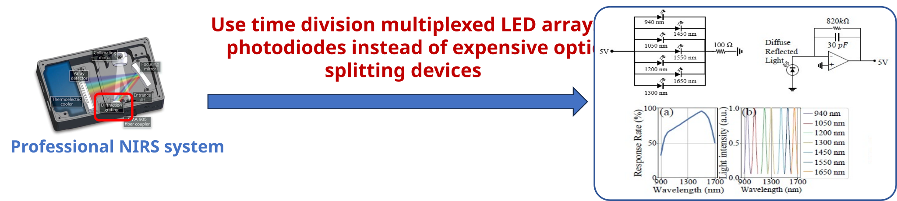
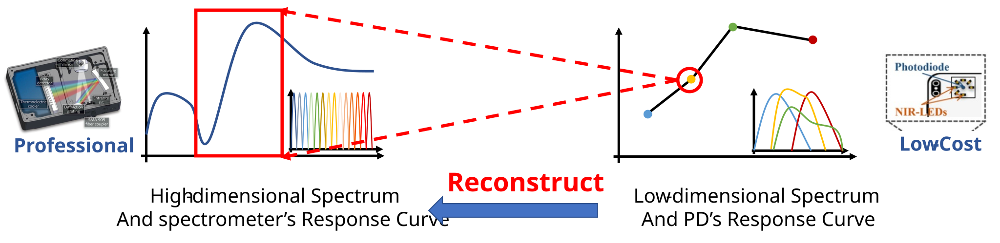
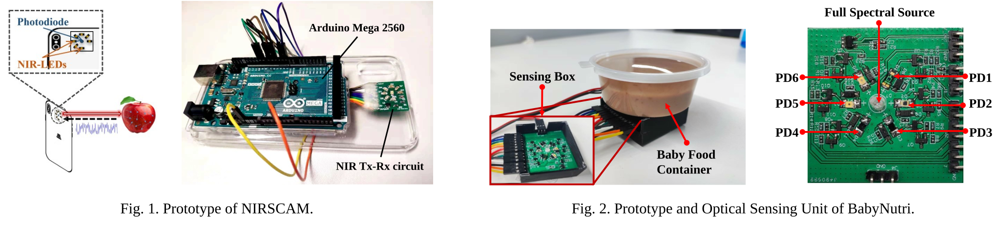

Spectroscopy for Food
Background: Dietary information is a critical dimension for health management. This information can be used to improve our health with self-awareness. If we can monitor food intake over the long term, it could enable doctors and nutritionists to study how chronic diseases are related to dietary habits and provide food suggestions for the population. Furthermore, some special populations have special needs for food intake and we need to pay extra attention to them.
We find that (near-infared) NIR technology has great potential for daily food safety inspection problems, and it has the following advantages:
- No sample preparation required: easy to operate and very friendly to untrained users.
- Non-destructive, low cost, and no pollution: no sample consumption, no use of chemical reagents, no pollution to the environment.
- Fast speed, high efficiency, and good reproducibility: can quickly feedback results, free from environmental interference, stable performance
Challenges: However, there are several challenges facing more cost-effective and convenient NIR systems for daily food detection. On the one hand, cost-effective devices always take the weak capability and are easy to interfere with. Thus, the first key point is to deal with the ubiquitous interference and improve the signal quality of the system by both hardware and software design. On the other hand, only limited and coarse-grained information can be obtained from the cost-effective device. We need to deal with the primitive signal and utilize methods to extract effective information so as to deduce the food intake.
Observation: We have two key observations to build low-cost NIR systems and extend its capability to meet various food detection applications.
- Inexpensive optics (leds, photodiodes) can be used to build simple spectral instruments, and signal processing algorithms and machine learning models can improve signal quality to achieve consumer-grade food safety solutions.

Build Low-Cost NIR System - The deep learning algorithm can be used to reconstruct fine-grained spectral data from the spectral information collected by low-cost equipment, thereby improving the detection limit of the equipment and solving finer grained food safety problems.

Reconstruct Spectra
Works: In our previous works, we mainly care about general food nutrition and type detection for normal people, and give special attention to the infants to monitor baby food nutrients.

-
General Food Nutrition and Calorie Detection:
Dietary information is a critical dimension for health management but has no convenient solution yet. We ask whether we can track meal composition unobtrusively. In this research, we introduce NIRSCAM, a new design that can recognize food calories and nutrients during the intake process, without on-body instruments. -
Nutrient monitoring of baby food: Proper nutrient intake is essential for infants. Currently, mothers can only track their baby’s nutrient intake from food packages (for commercial food) or recipes (for homemade food), which could be cumbersome and unreliable. Therefore, we build a low-cost spectrometer system for accurate baby food nutrient monitoring, named BabyNutri, which costs less than 10 dollars but achieves comparable performance to commercial solutions.
Related publications:
-
[ACM IMWUT/Ubicomp’23] Haiyan Hu, Qianyi Huang, and Qian Zhang. “BabyNutri: A Cost-Effective Baby Food Macronutrients Analyzer Based on Spectral Reconstruction.” [paper]
-
[IEEE IoTJ’22] Haiyan Hu, Qian Zhang and Yanjiao Chen, “NIRSCam: A Mobile Near-Infrared Sensing System for Food Calorie Estimation.” [paper]